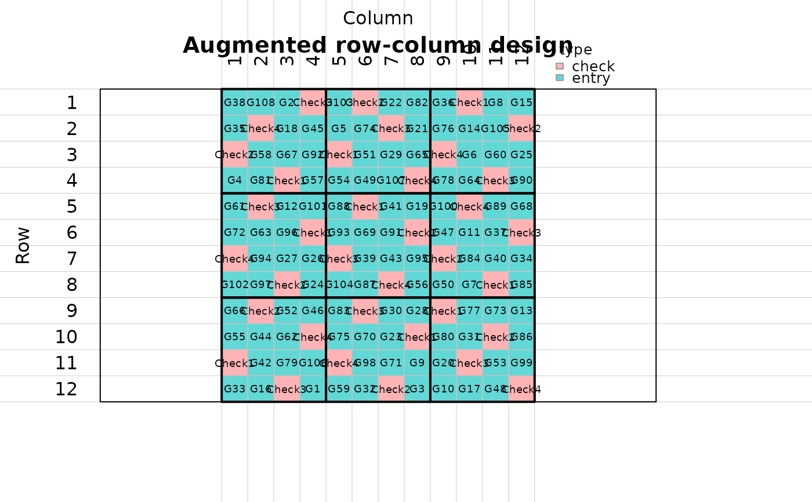

Plot an augmented row-column design grid
Source:R/augmented_row_column.R
plot_augmented_row_column_design.RdDraws a field grid for an augmented row-column design, with plot cells, row and column labels, and thick outlines around row-column blocks.
Usage
plot_augmented_row_column_design(
design,
label = c("all_entries", "type", "block", "none"),
fill = c("type", "block", "rowgroup", "colgroup", "is_control"),
show_plot_labels = TRUE,
show_block_labels = FALSE,
block_label_position = c("background", "center"),
label_cex = NULL,
block_label_cex = NULL,
block_label_col = NULL,
block_lwd = 2,
main = NULL,
legend = TRUE,
...
)Arguments
- design
An object returned by
augmented_row_column_design()or a design data frame with row, column, and block columns.- label
Cell label to show. Use
"all_entries","type","block", or"none".- fill
Cell coloring variable. Use
"type","block","rowgroup","colgroup", or"is_control".- show_plot_labels
Logical. If
TRUE, labels are printed inside cells unlesslabel = "none".- show_block_labels
Logical. If
TRUE, block numbers are printed. Defaults toFALSEso block labels do not overlap accession labels.- block_label_position
Position for block labels when
show_block_labels = TRUE. Use"background"for a faint watermark behind accession labels or"center"for a regular center label.- label_cex
Optional text size for plot-cell labels.
- block_label_cex
Optional text size for block labels.
- block_label_col
Color for block labels.
- block_lwd
Line width for block boundaries.
- main
Optional plot title.
- legend
Logical. If
TRUE, draw a legend for cell colors.- ...
Additional arguments passed to
graphics::plot.window().
Examples
design <- augmented_row_column_design(
treatments = paste0("G", seq_len(108)),
controls = paste0("Check", seq_len(4)),
rows_in_field = 12,
cols_in_field = 12,
rows_per_block = 4,
cols_per_block = 4,
n_candidates = 20,
seed = 123
)
plot_augmented_row_column_design(design, label = "all_entries")
